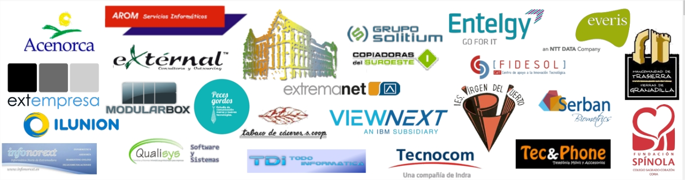

El IES Valle del jerte es uno de los centros de referencia en la ciudad de Plasencia.
Cuenta con 765 alumnos pertenecientes a:
- Educación Secundaria obligatoria
- Formación Profesional Básica
- Ciclo Formativo de Grado Medio
- Ciclo Formativo de Grado Superior


Ofrecemos una amplia oferta de Formación Profesional reglada de la familia de informática y Comunicaciones:
- Formación Profesional básica de Informática de Oficina
- Ciclo Formativo de Grado Medio de Sistemas Microinformáticos y Redes
- Ciclo Formativo de Grado Superior de Desarrollo de Aplicaciones Multiplataforma
- Ciclo Formativo de Grado Superior de Desarrollo de Aplicaciones Web
- Ciclo formativo de Grado Superior de Administración de Sistemas Informáticos en Red
Colaboramos con decenas de empresas del sector para ofrecer oportunidades de empleo para nuestros alumnos egresados:

Direccion: Calle Pedro y Francisco González, s/n, 10600 Plasencia, Cáceres
Teléfono: 927 01 77 74
Email: ies.valledeljerte@edu.juntaex.es
Disponemos de un Campus Virtual bajo la tecnología de Moodle para dar soporte a toda la docencia presencial de nuestros Ciclos Formativos

Puedes acceder a él a través de este enlace